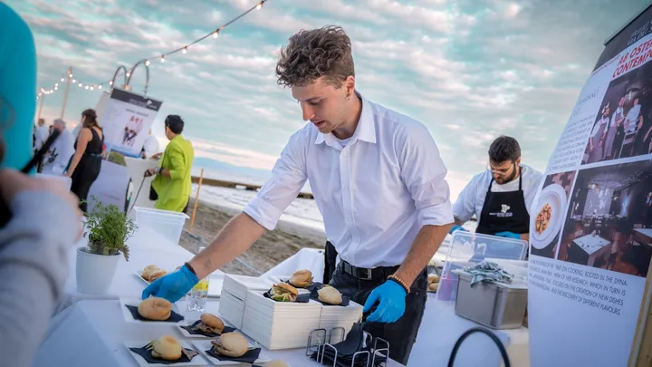

mar 8 set · dalle 19:00
Dinner Show Friuli Venezia Giulia Via dei Sapori
Percorso gourmet sulla spiaggia con 27 chef, vignaioli, artigiani del gusto, dessert, vini e distillati.
 Indicazioni
Indicazioni
- Costi e prenotazioni
- Biglietto €90 · Acquisto anticipato presso consorzio e punti vendita
- Programma
- Programma confermato. Orario, prezzo, partecipanti e modalità di acquisto pubblicati.
- In caso di maltempo
- In caso di maltempo la serata viene recuperata mercoledì 9 settembre.
- Note
- Evento gastronomico in spiaggia con percorso a postazioni.
L’EVENTO
Descrizione completa
Il Dinner Show chiude il tour 2026 di Friuli Venezia Giulia Via dei Sapori con un grande percorso gastronomico sulla spiaggia di Lignano. Ventisette chef e numerosi produttori presentano assaggi, vini, dessert, caffè e distillati.
La serata inizia alle 19:00 e il biglietto costa 90 euro. I tagliandi sono disponibili presso i ristoranti del gruppo e la segreteria del consorzio; la fonte elenca anche alcuni punti vendita a Lignano.
Il menu completo è pubblicato sul sito del consorzio. La formula è itinerante: gli ospiti si muovono tra le postazioni allestite sulla spiaggia vicino alla Terrazza a Mare.
IL PROGRAMMA
Programma e orari
Appuntamenti raccolti dalle fonti elencate. Dove manca un orario, non è ancora disponibile in questa scheda.
Martedì 8 settembre
- 19:00 · apertura del Dinner Show
- Percorso di degustazione tra chef, vignaioli e artigiani
- Finale con dessert, caffè e distillati
Mercoledì 9 settembre
- Data di recupero esclusivamente in caso di maltempo
INFORMAZIONI UTILI
Prima di partire
- Evento gastronomico in spiaggia con percorso a postazioni.
- Menu completo sul sito Friuli Venezia Giulia Via dei Sapori.
- Contatti: 0432 530052, ore 09:00–12:00 · info@friuliviadeisapori.it
ORGANIZZAZIONE